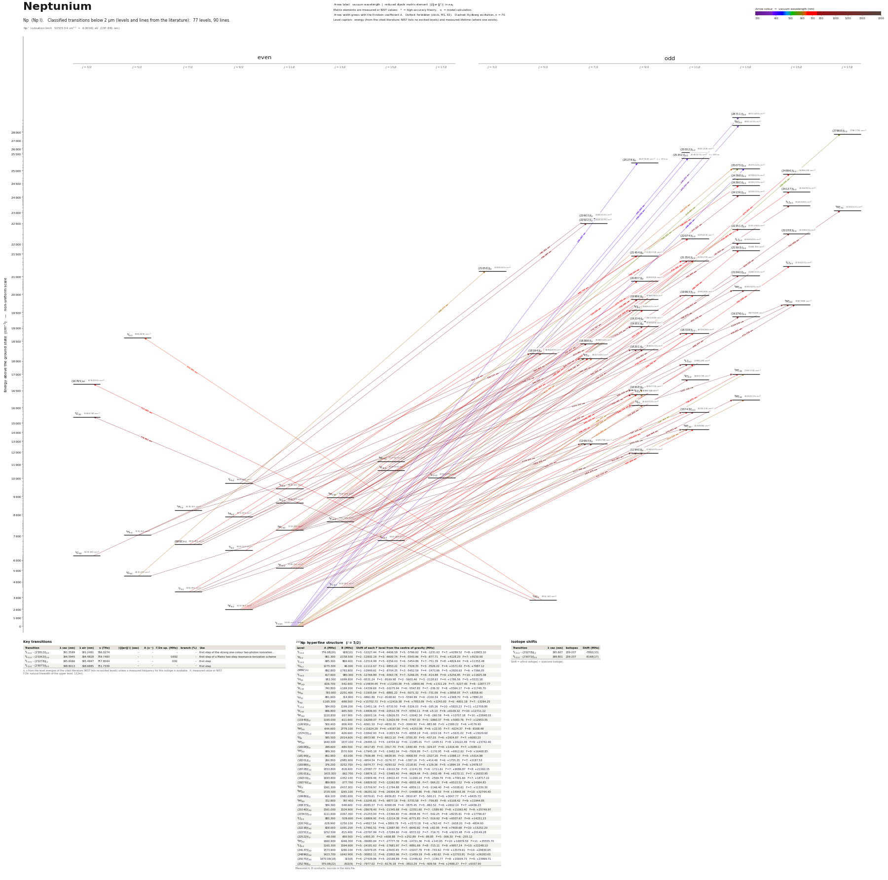

Neptunium energy level diagram
Energy levels and transitions of neutral neptunium (Np I): 77 levels and 90 classified lines below 2 µm taken from the cited literature, each line with its vacuum wavelength and frequency. The NIST Atomic Spectra Database lists only the ground level and the ionisation limit of neptunium, so the level energies on this page are those of the literature sources named below.
Hover a line or a level to isolate it, click to keep it selected. Scroll to zoom, drag to move.

Download: diagram (PDF) diagram (SVG) transitions (CSV) levels (CSV) source code

Key transitions of neptunium
| Transition | λ vac (nm) | λ air (nm) | ν (THz) | |⟨J‖er‖J′⟩| (ea₀) | A (s⁻¹) | Γ/2π up. (MHz) | branch (%) | Use |
|---|---|---|---|---|---|---|---|---|
| 6L11/2 – (25552)°11/2 | 391.3599 | 391.2491 | 766.0274 | – | – | – | – | first step of the strong one-colour two-photon ionization… |
| 6L11/2 – (25342)°11/2 | 394.5945 | 394.4828 | 759.7483 | – | – | 0.692 | – | first step of a Mainz two-step resonance-ionization scheme |
| 6L11/2 – (25278)°9/2 | 395.6066 | 395.4947 | 757.8044 | – | – | 0.92 | – | first step |
| 6L11/2 – (25075)°13/2 | 398.8013 | 398.6885 | 751.7339 | – | – | – | – | first step |
λ, ν from the level energies of the cited literature (NIST lists no excited levels) unless a measured frequency for this isotope is available. A: measured value or NIST. Γ/2π: natural linewidth of the upper level, 1/(2πτ).
237Np hyperfine structure (I = 5/2)
| Level | A (MHz) | B (MHz) | Shift of each F level from the centre of gravity (MHz) |
|---|---|---|---|
| 6L11/2 | 776.08(20) | 928(10) | F=3: -12227.44 F=4: -9406.59 F=5: -5766.62 F=6: -1231.63 F=7: +4289.52 F=8: +10903.10 |
| 6K9/2 | 861.300 | -2158.500 | F=2: -12832.19 F=3: -9600.74 F=4: -5543.96 F=5: -877.71 F=6: +4128.20 F=7: +9150.00 |
| 6L13/2 | 685.300 | 869.400 | F=4: -12514.99 F=5: -9356.00 F=6: -5454.86 F=7: -751.39 F=8: +4824.64 F=9: +11353.48 |
| 4G5/2 | 1275.300 | 66.000 | F=0: -11112.67 F=1: -9853.22 F=2: -7328.35 F=3: -3526.22 F=4: +1571.03 F=5: +7987.12 |
| (6892)7/2 | 892.800 | -1783.800 | F=1: -10999.61 F=2: -8704.35 F=3: -5452.59 F=4: -1473.66 F=5: +2926.63 F=6: +7366.05 |
| 6L15/2 | 617.600 | 980.300 | F=5: -12766.89 F=6: -9363.78 F=7: -5266.05 F=8: -414.88 F=9: +5256.95 F=10: +11825.08 |
| 6H5/2 | 953.300 | -1699.800 | F=0: -9531.24 F=1: -8169.98 F=2: -5600.46 F=3: -2128.63 F=4: +1786.56 F=5: +5533.18 |
| 8M11/2 | -926.700 | -542.600 | F=3: +14834.44 F=4: +11293.38 F=5: +6800.46 F=6: +1311.29 F=7: -5227.40 F=8: -12877.77 |
| 6K13/2 | 740.800 | -1169.200 | F=4: -14339.69 F=5: -10275.94 F=6: -5547.83 F=7: -236.32 F=8: +5564.17 F=9: +11745.70 |
| 4H9/2 | 793.000 | -2251.400 | F=2: -11935.64 F=3: -8881.22 F=4: -5071.32 F=5: -731.09 F=6: +3858.05 F=7: +8358.40 |
| 6H7/2 | 891.600 | 314.800 | F=1: -9861.86 F=2: -8168.60 F=3: -5594.99 F=4: -2100.54 F=5: +2368.70 F=6: +7880.20 |
| 8L9/2 | -1165.300 | -698.500 | F=2: +15702.73 F=3: +12416.38 F=4: +7953.09 F=5: +2243.00 F=6: -4801.18 F=7: -13284.25 |
| 6L17/2 | 584.000 | 1199.200 | F=6: -13451.16 F=7: -9733.50 F=8: -5326.03 F=9: -165.26 F=10: +5820.23 F=11: +12709.80 |
| 6K15/2 | 686.800 | -665.500 | F=5: -14836.93 F=6: -10510.78 F=7: -5550.11 F=8: +5.13 F=9: +6109.32 F=10: +12711.12 |
| 8M15/2 | 1220.800 | -167.900 | F=5: -26003.16 F=6: -18626.55 F=7: -10042.34 F=8: -260.59 F=9: +10707.18 F=10: +22848.03 |
| (11940)°9/2 | 1165.000 | -611.600 | F=2: -16299.07 F=3: -12620.59 F=4: -7787.30 F=5: -1860.37 F=6: +5083.76 F=7: +12953.35 |
| (12693)°7/2 | 500.400 | -806.400 | F=1: -6061.50 F=2: -4830.30 F=3: -3069.90 F=4: -883.98 F=5: +1589.22 F=6: +4176.90 |
| 8M°11/2 | -644.600 | 2779.100 | F=3: +11624.29 F=4: +8197.00 F=5: +4253.96 F=6: +22.55 F=7: -4224.37 F=8: -8168.48 |
| (15743)°11/2 | 959.000 | -626.600 | F=3: -15842.93 F=4: -11815.54 F=5: -6858.19 F=6: -1022.16 F=7: +5631.02 F=8: +13029.60 |
| 4I°9/2 | 585.500 | -2014.600 | F=2: -8973.98 F=3: -6613.10 F=4: -3700.30 F=5: -437.03 F=6: +2924.87 F=7: +6083.23 |
| 8M°13/2 | 1440.500 | 1337.100 | F=4: -26495.11 F=5: -19704.02 F=6: -11385.01 F=7: -1445.51 F=8: +10222.49 F=9: +23742.40 |
| (16508)°9/2 | 298.600 | -680.500 | F=2: -4417.65 F=3: -3317.70 F=4: -1930.49 F=5: -324.07 F=6: +1416.49 F=7: +3189.12 |
| 6M°13/2 | 989.300 | 1570.900 | F=4: -17945.18 F=5: -13482.04 F=6: -7926.88 F=7: -1170.95 F=8: +6912.62 F=9: +16468.85 |
| (18194)°5/2 | 852.900 | -63.000 | F=0: -7506.98 F=1: -6638.95 F=2: -4908.59 F=3: -2327.20 F=4: +1088.17 F=5: +5314.88 |
| (18201)°9/2 | 260.800 | -2985.900 | F=2: -4954.54 F=3: -3276.37 F=4: -1387.16 F=5: +414.49 F=6: +1755.35 F=7: +2187.53 |
| (18388)°7/2 | 376.200 | -3252.700 | F=1: -5974.77 F=2: -4293.02 F=3: -2118.91 F=4: +129.36 F=5: +1894.19 F=6: +2478.57 |
| (18728)°11/2 | 1553.800 | -818.400 | F=3: -25587.77 F=4: -19122.59 F=5: -11141.55 F=6: -1711.61 F=7: +9086.87 F=8: +21160.15 |
| (19101)°9/2 | 1433.300 | -362.700 | F=2: -19874.11 F=3: -15465.40 F=4: -9629.44 F=5: -2402.49 F=6: +6170.11 F=7: +16033.95 |
| (19234)°9/2 | 1693.800 | -1352.100 | F=2: -23909.46 F=3: -18422.43 F=4: -11264.14 F=5: -2569.79 F=6: +7491.60 F=7: +18717.22 |
| (19276)°13/2 | 889.800 | -377.700 | F=4: -16829.02 F=5: -12263.80 F=6: -6833.48 F=7: -564.21 F=8: +6513.52 F=9: +14364.83 |
| 8K°9/2 | 1061.300 | -2437.300 | F=2: -15709.97 F=3: -11794.88 F=4: -6859.11 F=5: -1146.40 F=6: +5038.61 F=7: +11330.30 |
| 8M°15/2 | 1729.500 | 1265.100 | F=5: -36291.02 F=6: -26304.39 F=7: -14488.86 F=8: -768.53 F=9: +14943.36 F=10: +32744.40 |
| (19986)°9/2 | 616.100 | -1981.600 | F=2: -9379.61 F=3: -6936.83 F=4: -3910.97 F=5: -500.21 F=6: +3047.77 F=7: +6435.73 |
| 6M°13/2 | 722.800 | 797.400 | F=4: -13245.81 F=5: -9877.16 F=6: -5733.58 F=7: -759.85 F=8: +5108.42 F=9: +11944.85 |
| (20837)°9/2 | 584.300 | -548.600 | F=2: -8285.57 F=3: -6368.09 F=4: -3875.45 F=5: -862.52 F=6: +2602.14 F=7: +6436.23 |
| (21040)°13/2 | 1561.000 | 1534.900 | F=4: -28678.40 F=5: -21345.68 F=6: -12351.60 F=7: -1589.90 F=8: +11063.40 F=9: +25749.97 |
| (21593)°13/2 | 1111.600 | -1067.300 | F=4: -21253.00 F=5: -15366.60 F=6: -8438.39 F=7: -542.25 F=8: +8235.61 F=9: +17796.67 |
| 4L°13/2 | 885.300 | -539.600 | F=4: -16806.91 F=5: -12214.38 F=6: -6771.83 F=7: -516.62 F=8: +6507.67 F=9: +14251.23 |
| (22074)°11/2 | -328.900 | -1250.100 | F=3: +4827.54 F=4: +3893.79 F=5: +2573.18 F=6: +763.43 F=7: -1658.20 F=8: -4834.90 |
| (22238)°15/2 | 828.000 | -1091.200 | F=5: -17992.51 F=6: -12687.80 F=7: -6640.82 F=8: +82.95 F=9: +7408.68 F=10: +15252.20 |
| (22251)°13/2 | 1252.500 | -815.400 | F=4: -23797.99 F=5: -17284.60 F=6: -9572.02 F=7: -716.71 F=8: +9215.48 F=9: +20149.28 |
| (22522)°7/2 | -48.000 | 659.500 | F=1: +893.30 F=2: +608.88 F=3: +252.89 F=4: -89.85 F=5: -306.30 F=6: -255.12 |
| 8M°17/2 | 1660.900 | 1046.300 | F=6: -39080.94 F=7: -27777.76 F=8: -14721.36 F=9: +143.65 F=10: +16879.59 F=11: +35555.70 |
| 8L°15/2 | 1165.300 | 1594.900 | F=5: -24181.63 F=6: -17681.97 F=7: -9891.69 F=8: -715.11 F=9: +9957.14 F=10: +22248.10 |
| (24137)°15/2 | 1573.900 | 1280.100 | F=5: -32979.05 F=6: -23930.65 F=7: -13207.78 F=8: -733.62 F=9: +13579.61 F=10: +29830.65 |
| (24896)°15/2 | 1423.700 | -1642.900 | F=5: -30852.11 F=6: -21802.96 F=7: -11459.19 F=8: +80.62 F=9: +12703.81 F=10: +26283.65 |
| (25075)°13/2 | 1470.09(18) | 323(8) | F=4: -27439.96 F=5: -20188.89 F=6: -11446.62 F=7: -1190.77 F=8: +10604.73 F=9: +23969.71 |
| (25278)°9/2 | 570.08(22) | -302(9) | F=2: -7977.02 F=3: -6176.18 F=4: -3810.29 F=5: -909.56 F=6: +2488.27 F=7: +6337.90 |
Measured A, B constants; sources in the data file.
Isotope shifts
| Transition | λ vac (nm) | Isotopes | Shift (MHz) |
|---|---|---|---|
| 6L11/2 – (25278)°9/2 | 395.607 | 239-237 | -7892(13) |
| 6L11/2 – (25075)°13/2 | 398.801 | 239-237 | -8168(17) |
Shift = ν(first isotope) − ν(second isotope).
Listed Np transitions below 2 µm
| Lower level | Upper level | λ vacuum (nm) | λ air (nm) | ν (THz) | Type | |⟨J‖er‖J′⟩| (ea₀) | A (s⁻¹) | Branching (%) | Source of matrix element / A |
|---|---|---|---|---|---|---|---|---|---|
| 6L11/2 | (28711)°13/2 | 348.2929 | 348.1932 | 860.7481 | E1 | – | – | – | – |
| 6L11/2 | 8N°13/2 | 350.2500 | 350.1498 | 855.9385 | E1 (intercombination) | – | – | – | – |
| 6L11/2 | (25552)°11/2 | 391.3599 | 391.2491 | 766.0274 | E1 | – | – | – | – |
| 6L11/2 | (25342)°11/2 | 394.5945 | 394.4828 | 759.7483 | E1 | – | – | – | – |
| 6L11/2 | (25278)°9/2 | 395.6066 | 395.4947 | 757.8044 | E1 | – | – | – | – |
| 6L11/2 | (25075)°13/2 | 398.8013 | 398.6885 | 751.7339 | E1 | – | – | – | – |
| 6L17/2 | (27868)°17/2 | 560.3256 | 560.1701 | 535.0326 | E1 | – | – | – | – |
| 8M11/2 | (24798)°13/2 | 565.4319 | 565.2750 | 530.2008 | E1 | – | – | – | – |
| 6K13/2 | (25075)°13/2 | 578.5996 | 578.4392 | 518.1346 | E1 | – | – | – | – |
| 6L11/2 | 6M°13/2 | 587.9690 | 587.8061 | 509.8780 | E1 | – | – | – | – |
| 6L11/2 | (16508)°9/2 | 605.7768 | 605.6091 | 494.8893 | E1 | – | – | – | – |
| 6L11/2 | 8L°9/2 | 607.5578 | 607.3896 | 493.4386 | E1 (intercombination) | – | – | – | – |
| 4G5/2 | (21058)°3/2 | 608.1730 | 608.0047 | 492.9395 | E1 | – | – | – | – |
| 6L11/2 | 8M°13/2 | 612.2195 | 612.0501 | 489.6813 | E1 (intercombination) | – | – | – | – |
| 6L11/2 | 4I°9/2 | 619.0297 | 618.8584 | 484.2942 | E1 (intercombination) | – | – | – | – |
| 8M13/2 | (25075)°13/2 | 620.1735 | 620.0019 | 483.4010 | E1 | – | – | – | – |
| 6K9/2 | 8K°7/2 | 621.7599 | 621.5879 | 482.1676 | E1 (intercombination) | – | – | – | – |
| 6H°5/2 | 8I5/2 | 631.9613 | 631.7865 | 474.3842 | E1 (intercombination) | – | – | – | – |
| 6L13/2 | (18728)°11/2 | 656.7918 | 656.6104 | 456.4498 | E1 | – | – | – | – |
| 6L17/2 | (24896)°15/2 | 672.2553 | 672.0698 | 445.9503 | E1 | – | – | – | – |
| 6K11/2 | (19993)°11/2 | 675.3204 | 675.1341 | 443.9262 | E1 | – | – | – | – |
| 6I9/2 | (21356)°11/2 | 679.7082 | 679.5207 | 441.0605 | E1 | – | – | – | – |
| 6I11/2 | (24390)°13/2 | 680.4506 | 680.2628 | 440.5793 | E1 | – | – | – | – |
| 6L15/2 | (21593)°13/2 | 680.7695 | 680.5817 | 440.3729 | E1 | – | – | – | – |
| 6I7/2 | 8K°7/2 | 681.8329 | 681.6448 | 439.6861 | E1 (intercombination) | – | – | – | – |
| (6892)7/2 | (21454)°9/2 | 686.7358 | 686.5464 | 436.5470 | E1 | – | – | – | – |
| 6K9/2 | (16508)°9/2 | 690.9052 | 690.7147 | 433.9126 | E1 | – | – | – | – |
| 6K11/2 | 8K°9/2 | 691.4859 | 691.2952 | 433.5482 | E1 (intercombination) | – | – | – | – |
| 6K9/2 | 8L°9/2 | 693.2229 | 693.0317 | 432.4619 | E1 (intercombination) | – | – | – | – |
| 6L13/2 | 8L°11/2 | 696.5561 | 696.3640 | 430.3924 | E1 (intercombination) | – | – | – | – |
| 6L11/2 | 8M°11/2 | 697.4045 | 697.2122 | 429.8688 | E1 (intercombination) | – | – | – | – |
| 6L15/2 | 4L°15/2 | 701.5981 | 701.4046 | 427.2994 | E1 (intercombination) | – | – | – | – |
| 8M11/2 | (21356)°11/2 | 702.0857 | 701.8921 | 427.0026 | E1 | – | – | – | – |
| 4H9/2 | (22074)°11/2 | 704.1093 | 703.9152 | 425.7754 | E1 | – | – | – | – |
| 6K9/2 | 4I°9/2 | 708.1977 | 708.0025 | 423.3174 | E1 (intercombination) | – | – | – | – |
| 6H°5/2 | (16765)3/2 | 717.6811 | 717.4833 | 417.7238 | E1 | – | – | – | – |
| 8M11/2 | (20837)°9/2 | 728.6296 | 728.4288 | 411.4470 | E1 | – | – | – | – |
| 6K9/2 | (15743)°11/2 | 729.4334 | 729.2325 | 410.9936 | E1 | – | – | – | – |
| 6K15/2 | (24137)°15/2 | 733.4548 | 733.2528 | 408.7402 | E1 | – | – | – | – |
| 6K13/2 | (21356)°11/2 | 737.2636 | 737.0605 | 406.6286 | E1 | – | – | – | – |
| 6I11/2 | (22251)°13/2 | 738.3062 | 738.1029 | 406.0543 | E1 | – | – | – | – |
| 6K11/2 | (18728)°11/2 | 738.3689 | 738.1656 | 406.0199 | E1 | – | – | – | – |
| 6L13/2 | 6M°13/2 | 740.4750 | 740.2711 | 404.8651 | E1 | – | – | – | – |
| 6L13/2 | 4K°11/2 | 751.4339 | 751.2271 | 398.9605 | E1 (intercombination) | – | – | – | – |
| 6K13/2 | (21040)°13/2 | 754.8152 | 754.6075 | 397.1733 | E1 | – | – | – | – |
| 6L17/2 | 8M°17/2 | 762.6936 | 762.4837 | 393.0706 | E1 (intercombination) | – | – | – | – |
| 8M13/2 | 4L°13/2 | 762.8955 | 762.6855 | 392.9666 | E1 (intercombination) | – | – | – | – |
| 6K11/2 | (18201)°9/2 | 768.3138 | 768.1024 | 390.1953 | E1 | – | – | – | – |
| 6I7/2 | 8L°9/2 | 768.7373 | 768.5258 | 389.9804 | E1 (intercombination) | – | – | – | – |
| 6L15/2 | 8M°15/2 | 773.7276 | 773.5147 | 387.4651 | E1 (intercombination) | – | – | – | – |
| 8M11/2 | (19993)°11/2 | 776.3752 | 776.1616 | 386.1438 | E1 | – | – | – | – |
| 8M11/2 | (19986)°9/2 | 776.7865 | 776.5728 | 385.9393 | E1 | – | – | – | – |
| 8M15/2 | (24136)°13/2 | 777.8209 | 777.6069 | 385.4261 | E1 | – | – | – | – |
| 6H°5/2 | 6G3/2 | 778.9618 | 778.7475 | 384.8616 | E1 | – | – | – | – |
| 6L13/2 | 8M°13/2 | 779.3531 | 779.1387 | 384.6683 | E1 (intercombination) | – | – | – | – |
| 8L9/2 | (22603)°7/2 | 785.3612 | 785.1452 | 381.7256 | E1 | – | – | – | – |
| 6K11/2 | 8L°11/2 | 789.0054 | 788.7884 | 379.9625 | E1 (intercombination) | – | – | – | – |
| 8L9/2 | (22522)°7/2 | 790.3892 | 790.1718 | 379.2973 | E1 | – | – | – | – |
| 8M11/2 | 8K°9/2 | 797.8175 | 797.5981 | 375.7657 | E1 | – | – | – | – |
| 6L15/2 | (19276)°13/2 | 808.2532 | 808.0310 | 370.9140 | E1 | – | – | – | – |
| 6K9/2 | 8M°11/2 | 812.6834 | 812.4600 | 368.8921 | E1 (intercombination) | – | – | – | – |
| 6K13/2 | 6M°13/2 | 815.7359 | 815.5116 | 367.5117 | E1 | – | – | – | – |
| 6L13/2 | (15743)°11/2 | 816.9681 | 816.7435 | 366.9574 | E1 | – | – | – | – |
| 6L17/2 | (22238)°15/2 | 818.5302 | 818.3052 | 366.2570 | E1 | – | – | – | – |
| (6892)7/2 | (19101)°9/2 | 819.0864 | 818.8612 | 366.0084 | E1 | – | – | – | – |
| 8M11/2 | (19234)°9/2 | 825.0097 | 824.7829 | 363.3805 | E1 | – | – | – | – |
| 6K13/2 | 8M°15/2 | 830.8512 | 830.6229 | 360.8257 | E1 (intercombination) | – | – | – | – |
| 8M11/2 | (19101)°9/2 | 834.1411 | 833.9119 | 359.4026 | E1 | – | – | – | – |
| 8M15/2 | 8L°15/2 | 835.9104 | 835.6807 | 358.6419 | E1 | – | – | – | – |
| 6L11/2 | (11940)°9/2 | 837.5157 | 837.2856 | 357.9544 | E1 | – | – | – | – |
| 6G3/2 | (18194)°5/2 | 853.2263 | 852.9919 | 351.3634 | E1 | – | – | – | – |
| (6892)7/2 | (18388)°7/2 | 869.8636 | 869.6248 | 344.6431 | E1 | – | – | – | – |
| (6892)7/2 | 8K°7/2 | 890.8480 | 890.6034 | 336.5248 | E1 | – | – | – | – |
| 6H5/2 | (18194)°5/2 | 894.5148 | 894.2693 | 335.1453 | E1 | – | – | – | – |
| 6H5/2 | 8K°7/2 | 900.7232 | 900.4760 | 332.8353 | E1 (intercombination) | – | – | – | – |
| 8M13/2 | 6M°13/2 | 900.8782 | 900.6309 | 332.7780 | E1 (intercombination) | – | – | – | – |
| 8M11/2 | (18201)°9/2 | 901.8678 | 901.6203 | 332.4129 | E1 | – | – | – | – |
| 6K13/2 | (18728)°11/2 | 914.3823 | 914.1314 | 327.8634 | E1 | – | – | – | – |
| 6K9/2 | (12693)°7/2 | 938.1919 | 937.9346 | 319.5428 | E1 | – | – | – | – |
| 6K11/2 | (15743)°11/2 | 947.1293 | 946.8696 | 316.5275 | E1 | – | – | – | – |
| 4H9/2 | (18201)°9/2 | 968.1803 | 967.9148 | 309.6453 | E1 | – | – | – | – |
| 6K13/2 | 8L°11/2 | 993.3283 | 993.0560 | 301.8060 | E1 (intercombination) | – | – | – | – |
| 6K9/2 | (11940)°9/2 | 1009.4780 | 1009.2013 | 296.9777 | E1 | – | – | – | – |
| 6I7/2 | (12693)°7/2 | 1082.0438 | 1081.7475 | 277.0613 | E1 | – | – | – | – |
| 8M15/2 | 8M°15/2 | 1169.8356 | 1169.5154 | 256.2689 | E1 | – | – | – | – |
| 6I7/2 | (11940)°9/2 | 1177.9840 | 1177.6616 | 254.4962 | E1 | – | – | – | – |
| 6H7/2 | (16508)°9/2 | 1215.1517 | 1214.8193 | 246.7120 | E1 | – | – | – | – |
| 4G5/2 | (12693)°7/2 | 1238.0689 | 1237.7302 | 242.1452 | E1 | – | – | – | – |
| 8M13/2 | 6M°13/2 | 1241.1452 | 1240.8057 | 241.5450 | E1 (intercombination) | – | – | – | – |
| 8M11/2 | 8M°11/2 | 1383.8053 | 1383.4271 | 216.6435 | E1 | – | – | – | – |
Reduced dipole matrix elements follow the convention A = ω³|d|²/(3πε₀ħc³(2J′+1)), with J′ the upper level. Tags show where a number comes from: measured, NIST compilation, high-accuracy theory, or a model calculation.
Np energy levels
Np⁺ ionisation limit 50535.54 cm⁻¹ = 6.26561 eV (197.881 nm)
Sources
- Blaise & Wyart, 'Selected Constants: Energy Levels and Atomic Spectra of Actinides' (Tabl…
- Blaise & Wyart, 'Selected Constants: Energy Levels and Atomic Spectra of Actinides' (Tabl…
- Blaise & Wyart, 'Selected Constants: Energy Levels and Atomic Spectra of Actinides' (Tabl…
- Blaise & Wyart, 'Selected Constants: Energy Levels and Atomic Spectra of Actinides' (Tabl…
- Blaise & Wyart, 'Selected Constants: Energy Levels and Atomic Spectra of Actinides' (Tabl…
- Kaja, Studer, Berg, Berndt, et al., 'Resonant laser ionization of neptunium: investigatio…
- Kaja, Urquiza-Gonzalez, Berg, Reich, Stemmler, Studer, et al., 'High-resolution laser spe…
Levels and classifications: archived online version (2002 captures) of the Blaise & Wyart actinide tables (Laboratoire Aime Cotton); energies refer to 237Np (hyperfine centre of gravity). In that level table the column headed 'J' after the energy is the Lande g factor. Hyperfine A and B of the table are printed in 10^-3 cm^-1 and were converted to MHz (1 x 10^-3 cm^-1 = 29.979 MHz; marked derived). Kaja et al. quote the first-step levels as 25075.15, 25277.64, 25342.48 and 25551.93 cm^-1; the three-decimal energies of the level table are used as identifiers. 'relative_intensity' is the emission intensity printed in the selected-wavelength table (300, 1000, 3000 or 10000) and only ranks lines. Isotope shifts are nu(239Np) - nu(237Np). Configurations are stored without parent terms (full printed string in each level note); terms printed in parentheses (leading component 25-50 %) are stored without the parentheses.
Atoms with measured data
- Lithium-632 levels, 85 lines
- Lithium-732 levels, 85 lines
- Beryllium-917 levels, 26 lines
- Sodium-2336 levels, 106 lines
- Magnesium-2418 levels, 61 lines
- Magnesium-2518 levels, 61 lines
- Potassium-3934 levels, 84 lines
- Potassium-4034 levels, 84 lines
- Potassium-4134 levels, 84 lines
- Calcium-4035 levels, 61 lines
- Calcium-4335 levels, 61 lines
- Rubidium-8536 levels, 94 lines
- Rubidium-8736 levels, 94 lines
- Strontium-8740 levels, 70 lines
- Strontium-8840 levels, 70 lines
- Caesium-13331 levels, 79 lines
- Barium-13744 levels, 89 lines
- Barium-13844 levels, 89 lines
- Dysprosium-16339 levels, 55 lines
- Dysprosium-16439 levels, 55 lines
- Ytterbium-17118 levels, 26 lines
- Ytterbium-17418 levels, 26 lines